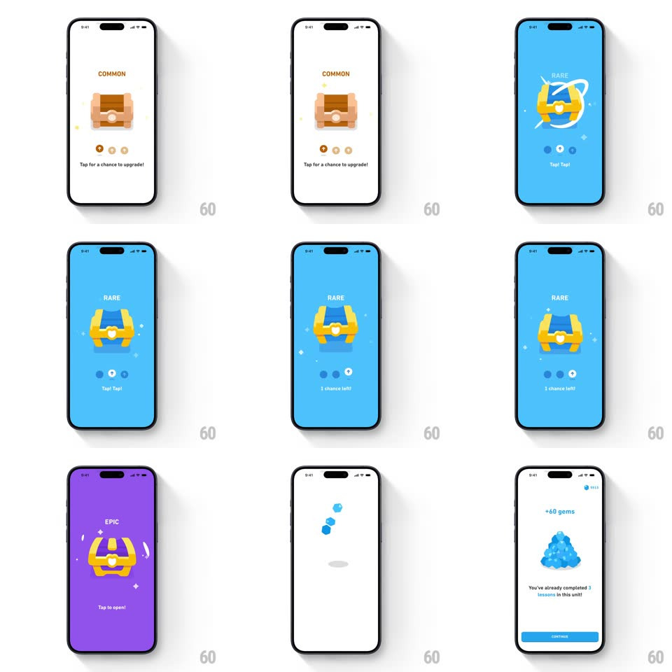

Media
Frame-by-frame

Rebuild this interaction 1:1: Duolingo's chest upgrade - tapping a COMMON wooden chest upgrades it through RARE to EPIC across full-screen color washes, then opening it bursts into sparkles and a "+60 gems" reward screen.

Rebuild this interaction 1:1: Duolingo's chest upgrade - tapping a COMMON wooden chest upgrades it through RARE to EPIC across full-screen color washes, then opening it bursts into sparkles and a "+60 gems" reward screen.
## Integration
Integration: stack-agnostic spec - springs given as stiffness/damping, timed motions as duration + curve; map every value to your framework and animation library of choice.
## Scene
Starts on the Duolingo path home, then a white screen: "COMMON" label, a wooden chest, three empty chance dots, "Tap for a chance to upgrade!". Upgrade states repaint the whole background: RARE on blue ("Tap! Tap!", "1 chance left!"), EPIC on purple ("Tap to open!"). Reward: white screen, "+60 gems" over a blue gem pile, "You've already completed 3 lessons in this unit!", blue CONTINUE pill.
## Motion spec
Pattern: tap-driven rarity escalation, ~450ms per upgrade.
- Tap: the chest squashes (scaleY 0.92, 100ms) and rebounds (spring ~400/20) as the background washes to the next rarity color (350ms, radial from the chest) and the rarity label swaps with a 6px rise (200ms).
- Upgrade: the chest itself cross-morphs wood -> blue -> gold (250ms) with a small flash burst at swap; a chance dot fills each tap (pop 0.5 -> 1).
- Open: the final tap flings the lid open (rotate -30deg, 300ms) with white sparkle stars bursting out (scale 0 -> 1 -> 0, staggered 60ms) and a light beam.
- Reward: cut to the gems screen; the pile scales in (0.7 -> 1.05 -> 1, spring ~340/20), "+60 gems" fades down, CONTINUE slides up (250ms, +150ms).
## Calibration
- Each tap has exactly one outcome - upgrade or open - telegraphed by the hint text.
- The background color is part of the reward: COMMON white, RARE blue, EPIC purple.
## Reduced motion
Chest and background crossfade per state (250ms); sparkles omitted.
## Don't miss
- The three dots under the chest track remaining chances and empty as you tap.
- The gem pile is a rendered heap of many small gems, not a single icon.